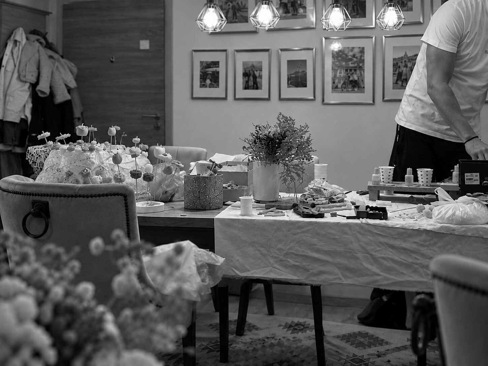
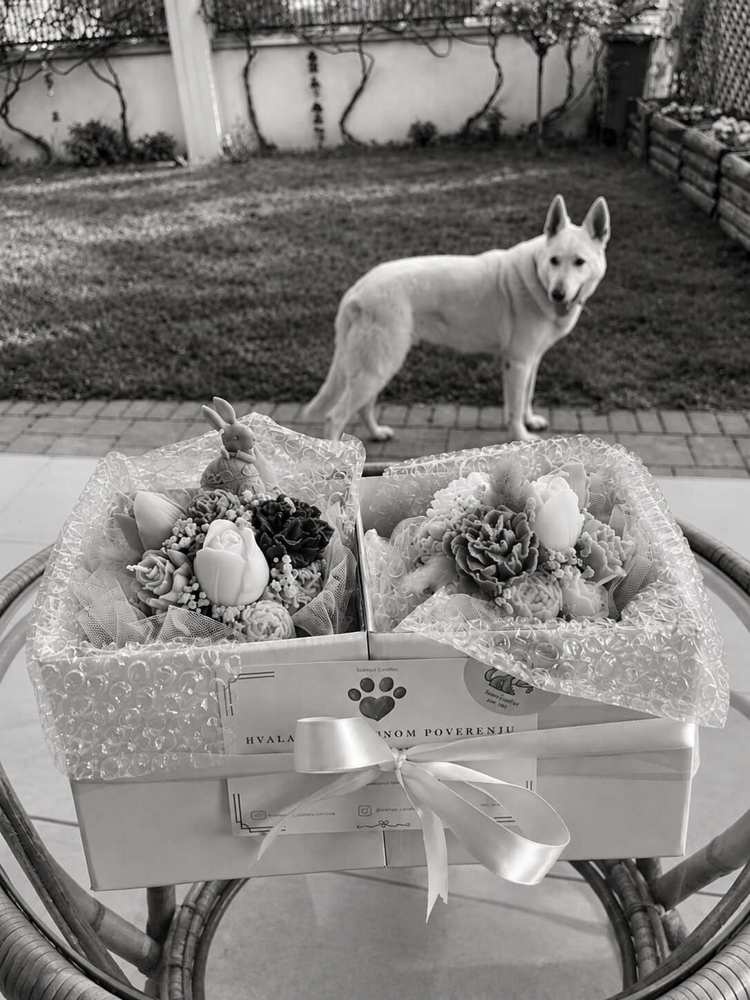

Naša priča
Scampy Candles je nastao sasvim spontano, u jednoj maloj trpezariji, iz želje da stvaramo nešto svojim rukama.
Nas dvoje smo po struci softverski inženjeri, ali smo oduvek imali i kreativnu stranu koja je tražila svoj prostor. Iako je svet tehnologije naš svakodnevni posao, Scampy je postao mnogo više od hobija – naš mali svet u kome ideje pretvaramo u nešto opipljivo.
Sve je počelo jednim loncem voska, prvim cvetnim svećama i idejom da napravimo bukete koji nikada ne venu. A sve to uz budno oko našeg psa Scampyja (Švrće), po kome je naš mali brend i dobio ime.
Od prvih buketa za naše najbliže stigli smo do desetina rođendana, krštenja i drugih posebnih trenutaka čiji smo danas mali deo.
Iako je Scampy porastao, trpezariju zamenila naša radionica, a prve eksperimente pažljivo osmišljen proces izrade, neke stvari se nisu promenile.
I dalje svaku sveću pravimo nas dvoje, ručno, sa istom pažnjom i uzbuđenjem kao na početku.
- 1.200+prodatih sveća
- 6autorskih mirisa
